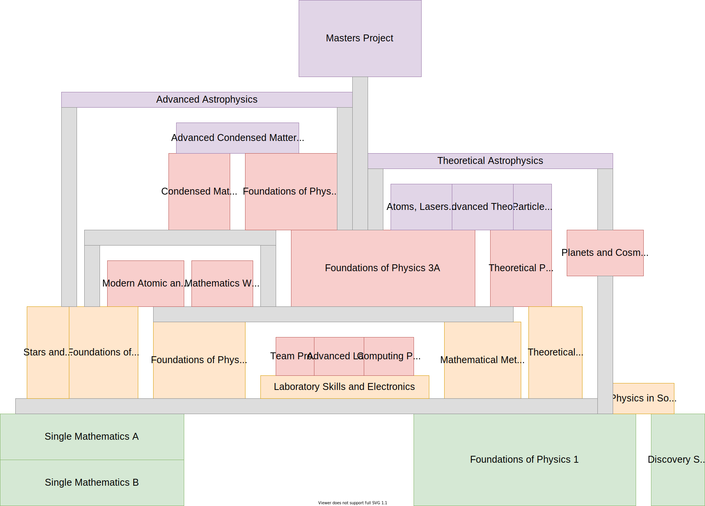

Durham University Physics
I did a physics degree! Call me Master alifeee. Here's some stuff from it.
I did a physics degree! Call me Master alifeee. Here's some stuff from it.


These trees were made to make choosing modules easier. They displays all prerequisites for the modules in the Durham Physics course. The first does it in a cool way (gravity) and the second in a boring way (directed graph).
Links and pages here were used to help people pick which modules to do in later years. A lot of links are to old Durham pages. The module tree is still pretty cool though.